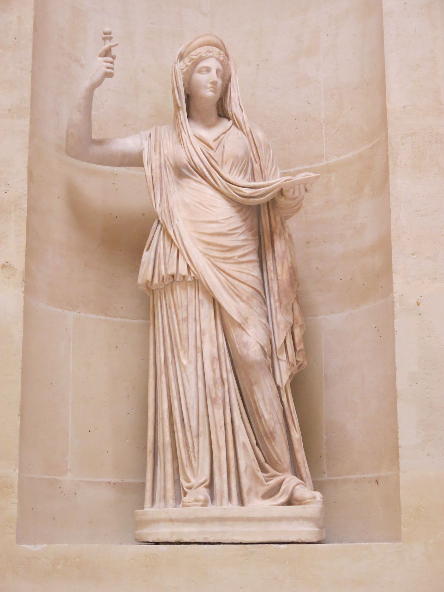

Queen of Olympus, Goddess of Marriage and Sovereignty

The Campana Hera, Roman marble after a Hellenistic original, 2nd century CE — Musée du Louvre, Paris
Hera is the goddess of marriage, sovereignty and legitimate union: the power that turns a match into a bond and a bond into a house that holds. Eldest daughter of Cronus and Rhea, swallowed at birth and restored with her siblings, she becomes queen of Olympus as wife to Zeus, her own brother, in a union the Greeks treated as the archetype of marriage itself rather than an oddity to explain away. Where Zeus personifies sovereignty as reach, the throne that can command anything, Hera personifies sovereignty as legitimacy: the vow, the recognition, the office that must be honoured regardless of what the office-holder feels like doing that day. Her anger, the single trait later tradition flattened her into (jealous wife, nothing more), is better read the other way round. It is not possessiveness for its own sake. It is the defence of the marriage bond against everyone, including her own husband, who treats it as negotiable. She rarely forgives and she is not gentle, but the thing she guards, the idea that a vow binds and a union has standing, is one the Greeks could not do without, and neither can anyone building a durable partnership, household or institution now.
The MythsHesiod's Theogony gives only the bare fact of the marriage, but later mythographers filled in the wedding itself with a detail that became Hera's signature gift: Gaia, the earth, presented the bride with a tree bearing golden apples, which Hera had planted in a garden at the western edge of the world and set under guard. The Hesperides, nymphs of the evening, tended it, and a hundred-headed serpent named Ladon coiled around the trunk, since a queen's wedding gift was not to be casually plucked. The garden reappears later as the site of one of Heracles's labours, the theft of the golden apples, which makes the tree a quiet hinge between Hera's dignity as bride and her long war with Zeus's most famous illegitimate son: even the plunder of her garden is entangled with the man she spends a dozen myths trying to destroy. As queen, Hera is rarely shown at leisure, but the garden is one of the few images of her simply as a wife receiving something beautiful, before the marriage becomes the battlefield it mostly is in myth.
No mortal suffers more of Hera's attention than Heracles, and Homer gives the persecution its founding scene. In the Iliad (19.95–133), Zeus boasts that a child of his blood, about to be born, will rule all his kin; Hera tricks him into swearing an oath to that effect, then has Eileithyia, goddess of childbirth, delay Alcmene's labour while hastening the birth of a lesser cousin, so the throne of Mycenae passes to Eurystheus instead of Heracles. It is characteristic: Hera's opening move is legal, not violent, a manipulation of oaths and timing rather than a thunderbolt. The violence comes after. Apollodorus records the serpents she sent into the infant's cradle, which he strangled with his bare hands; Euripides' Heracles stages her cruellest stroke, a madness that drives the hero to kill his own wife and children. The famous Twelve Labours are, in most tellings, penance for that act, imposed by Eurystheus but shadowed throughout by Hera, who obstructs almost every one. Yet the story does not end in enmity. When Heracles is finally received onto Olympus, it is Hera who consents to his apotheosis and gives him her daughter Hebe in marriage: the queen who pursued him longest is also the one whose blessing completes him.
At the wedding of the mortal Peleus and the sea-nymph Thetis, the uninvited Eris, goddess of discord, threw a golden apple among the guests inscribed "for the fairest." Hera, Athena and Aphrodite each claimed it. The full contest is not in Homer, who only glances at it (Iliad 24.25–30, where the poet notes that Paris's judgement earned Athena and Hera lasting hatred for Troy); the fleshed-out version survives through the lost epic Cypria and later writers such as Apollodorus. Zeus, unwilling to judge among his own wife and daughters, sent the goddesses to the Trojan prince Paris on Mount Ida. Hera offered political power, Athena offered wisdom and victory in war, Aphrodite offered the most beautiful woman alive: Helen, already married to a Greek king. Paris chose Aphrodite. The consequence was the Trojan War, and it left Hera implacably on the Greek side throughout the Iliad, not from any love of the Achaeans but because Troy carries the insult of a judgement against her sovereignty. It is the clearest instance in Greek myth of Hera's anger operating exactly like a queen's: an offence against her standing becomes, without exception, a matter of state.
Zeus, pursuing the priestess Io, turned her into a white heifer to hide the affair from his wife. Hera was not fooled. In Aeschylus's Prometheus Bound and Ovid's Metamorphoses (Book 1), she asks for the heifer as an innocent gift, receives it, and sets the giant Argus Panoptes, covered in a hundred eyes that never all slept at once, to guard her day and night. When Hermes, on Zeus's orders, lulls Argus to sleep with story and song and kills him, Hera takes his hundred eyes and sets them in the tail of her sacred bird, the peacock, and afterwards sends a gadfly to sting Io into a maddened, endless flight across the world, as far as Egypt, before the torment is finally lifted. The myth is often read simply as jealousy, but its structure is closer to jurisprudence: the wronged party gathers evidence, appoints a warder, and when the warder is murdered, converts the loss into a permanent, visible emblem of vigilance. The peacock's eyes are Hera's memory made ornamental.
Sources disagree sharply on this one, and the disagreement matters. Hesiod's Theogony (927–929) states plainly that Hera bore Hephaestus alone, without Zeus, in direct retaliation for his solo birth of Athena from his own head: a tit-for-tat conception that makes Hephaestus, in this telling, hers only. Homer complicates it. In the Iliad (1.578, 18.395–397) Hephaestus refers to both Zeus and Hera as his parents, with no hint of the parthenogenesis Hesiod describes. What both traditions agree on is the rejection that follows: appalled by his lameness, Hera (in some versions Zeus) flings the infant from Olympus, and he is raised in secret by sea-nymphs. Hephaestus's revenge, recorded by later sources including Pausanias and Hyginus and illustrated repeatedly on Greek vases under the theme "the Return of Hephaestus," is a golden throne sent to Olympus as a gift: Hera sits, and invisible bonds close around her, and no god can free her. Only Dionysus, arriving with wine, gets the smith drunk enough to be led back to Olympus and persuaded to release his own mother. It is one of the few myths in which Hera is not the author of a punishment but its recipient, and the one place where her exacting standards for legitimacy, the offence that started the whole chain, cost her a child.
Epithets and DomainsHera as the completing power of wedlock, invoked in the wedding rite itself; Aeschylus has the chorus of the Eumenides call on Hera Teleia in a marriage hymn. The aspect that makes a match a lawful union rather than a private arrangement.
Her marriage aspect gave its name to the Attic month Gamelion (roughly January–February), the month the Athenians favoured for weddings, sacred to Hera as patroness of the rite.
Her greatest and oldest cult centre: the Argive Heraion, described at length by Pausanias (2.17), home to Polykleitos's celebrated gold and ivory cult statue. Argos was Hera's city in the way Athens belonged to Athena.
Her standing honorific in epic verse, "Hera the queen," used of her position among the gods rather than tied to one shrine.
Pausanias (8.22.2) describes three shrines to Hera at Stymphalos in Arcadia, each marking a stage of a woman's life: Pais while unwed, Teleia once married to Zeus, and Chera, "widow" or "separated," for a period tradition held she quarrelled with her husband and withdrew. A rare cult expression of the goddess ageing through her own myth.
Her great temple near Croton in southern Italy, on the promontory of Lacinium, noted by Livy and Diodorus Siculus as one of the wealthiest and most venerated shrines of Magna Graecia.
A sanctuary of Hera Antheia stood near the agora at Argos, recorded by Pausanias (2.22); the aspect of the goddess tied to blossoming and the fertile turn of the year.
Her cult at Perachora on the heights above the Corinthian gulf, the sanctuary tradition also associates with the grief of Medea's children, whose graves later Greeks located there.
In Jean Shinoda Bolen's Goddesses in Everywoman, Hera is the archetype of commitment: the psyche for whom partnership is not one good among many but the organising principle of a life. Where an Aphrodite pattern falls in love with a person, the Hera pattern gives itself to the bond, the standing, sworn, witnessed thing that two people become. Jungian writing on the coniunctio, the sacred marriage, treats what Hera personifies as one of the deepest images the psyche produces: union as transformation, two made into a third thing that neither could be alone. Her Greek cult knew her as Teleia, the fulfiller, because marriage was understood as a woman's telos in that culture; read psychologically rather than sociologically, Teleia names the real gift of this archetype, the capacity to be completed by commitment rather than diminished by it.
The light expression is the great partner and the great institutionalist. Hera consciousness keeps its word when keeping it costs; it confers legitimacy, standing beside someone and thereby making them more than they were; it thinks in offices and obligations rather than moods, which makes it the backbone of every durable household, firm and alliance. It also holds the loneliest form of courage, fidelity to the vow when the other party has failed it, not out of weakness but because the vow is real to her in the way the weather is real. And, as the Stymphalian cult of the girl, the wife and the widow suggests, it knows the bond has seasons, and survives them.
The shadow is precise and well documented in the myths: the rage lands in the wrong place. Hera almost never strikes Zeus. She strikes Io, Leto, Semele, Alcmene, and above all the children, Heracles pursued from the cradle. Psychologically this is the signature of the wounded Hera pattern: the humiliated partner who cannot afford to attack the relationship itself, because the relationship is her identity, and so redirects the fury at rivals, at reminders, at innocents. The second shadow is the golden throne inverted: binding as a way of loving. Where the light Hera confers standing, the shadow Hera confers obligation, and cannot tell the difference between being honoured and being obeyed. The third is endurance curdled: staying in what should end, because leaving would unmake her. The archetype's work, in Bolen's terms, is to discover that the vow was always hers, that the dignity she guards does not live in the other person's behaviour.
In Modern LifeHera is the archetype of the committed partner and the legitimate institution, and she is everywhere organisations are. She is the co-founder who signs personally and stays through the down years; the chief of staff whose authority is entirely relational and entirely real; the partner in the firm for whom the partnership agreement is a covenant, not a document. Hera people are the ones who take the office seriously even when they hold no title: the keeper of the standards, the one who remembers what was promised at the start.
In coaching, the pattern shows up with unusual clarity around organisational betrayal. A Hera-pattern leader whose institution breaks faith with her (a passed-over promotion, a merger that voids old undertakings, a founder who quietly rewrites the deal) suffers something closer to divorce than disappointment, and the anger routes exactly as the myths predict: not at the powerful person who broke the promise but at the beneficiary, the new hire, the rival team, the successor. Naming that displacement is often the single most useful intervention. The developmental questions for the pattern are Hera's own: can you distinguish the vow from the person who took it, can you let a commitment end without losing the self that made it, and can you tell the difference between loyalty and self-erasure?
In relationships the light Hera is the marriage that actually holds, the partnership as a made thing, maintained daily. The shadow is the one who polices the bond instead of inhabiting it, audits rather than trusts, and stays decades past the truth. And modern work culture runs on unacknowledged Hera energy: every time an organisation asks for loyalty it is invoking her, and every time it discards a loyal person it re-stages her oldest wound, and should not be surprised by the quality of the anger that follows.
CorrespondencesNone in the Greek system: the seven classical planets were assigned to other gods. The asteroid Juno, discovered in 1804, is a modern astronomical naming and any astrological use of it is modern convention.
Gamelion, the Attic wedding month (roughly January–February), sacred to her marriage aspect; the Athenians held the Theogamia, celebrating the wedding of Zeus and Hera, within it.
White, gold, royal blue, peacock green. Modern convention: no colour is securely attested for her in ancient cult, though her cult statues were ivory and gold.
The diadem and the high crown called the polos, the sceptre, the veil, the pomegranate. Pausanias (2.17.4) describes Polykleitos's cult statue at Argos holding a pomegranate in one hand and a sceptre topped with a cuckoo in the other, and declines to explain the pomegranate, calling it a story not to be told: a mystery kept even from his readers.
The cow (Homer's standing epithet for her is boōpis, ox-eyed, and cattle were the great sacrifice of her Argive festival), the cuckoo (the form Zeus took to woo her, per the same passage of Pausanias), and the peacock, whose eyed tail later tradition derives from Argus. The peacock is real cult iconography at Samos but reaches Greek art only in the classical period and later; treat it as the youngest of the three.
The pomegranate (the Argive statue), and the lygos or chaste-tree of Samos, under which Samian tradition placed her birth; the tree stood in the sanctuary and was central to the Tonaia rite. Beyond these two, plant lists are modern convention.
Incense, libations, and in ancient practice cattle in quantity: the Argive Heraia centred on a great procession and sacrifice of oxen. Herodotus (1.31) sets the story of Cleobis and Biton, who drew their mother's cart to the festival themselves, at this rite. Modern practice commonly offers pomegranates, apples, white flowers and peacock feathers; these are contemporary conventions, reasonable but not ancient.
The Heraia of Argos, her greatest festival, with games whose prize was a bronze shield. The Heraia at Olympia, footraces of unmarried girls, which Pausanias (5.16) says were as old as the men's games. The Tonaia at Samos, in which her image was bound with lygos branches. The Great Daedala of Boeotia, held at long intervals on Mount Cithaeron.
The Argive Heraion; Samos, whose temple of Hera grew into one of the largest ever attempted in the Greek world; the Heraion at Olympia, older than the temple of Zeus beside it; Perachora above the Corinthian gulf; Cape Lacinium at Croton.
None securely attested; claims of a monthly day for Hera in modern calendars are convention.
A ritual worth knowing about: the Great Daedala, described by Pausanias (9.3). After a quarrel with Zeus, the myth runs, Hera withdrew; Zeus, advised by a local king, dressed a wooden effigy as a bride and staged a mock wedding, and Hera, arriving in fury to confront the rival, found a statue, laughed, and was reconciled. The Boeotians re-enacted this at long intervals: a wooden bride, a procession, and a great pyre on Cithaeron in which effigy, altar and offerings burned together. As ritual psychology it is remarkably exact: the rage is provoked, met with an image rather than a rival, and discharged into laughter and fire. The oldest recorded technique for ending a marital war is a ritual of projection withdrawn.
Zeus, her brother and husband, king of Olympus
Ares, Hebe and Eileithyia, all by Zeus. Hephaestus too, though the sources conflict on his parentage: Hesiod's Theogony makes him hers alone, born without a father in answer to Zeus's solo birth of Athena, while Homer's Iliad treats him as the joint son of Zeus and Hera
Zeus's lovers and their children bear the weight of her anger far more often than Zeus himself: Leto, harried across the world before she could give birth to Apollo and Artemis; Semele, destroyed by a trick that exposed her to Zeus's true form; Alcmene and her son Heracles, pursued from the womb to the pyre; Io, transformed and hounded to Egypt. After the Judgement of Paris, the Trojans as a people become her enemies for the length of the war
Hera's own story begins where her siblings' does: swallowed by Cronus at birth and freed when Zeus forced him to disgorge his children, an episode told in The Age of the Titans and settled by the war recounted in The Titanomachy. She comes out of her father a second time into a world already being divided among her brothers, and takes the throne beside the one who divided it.